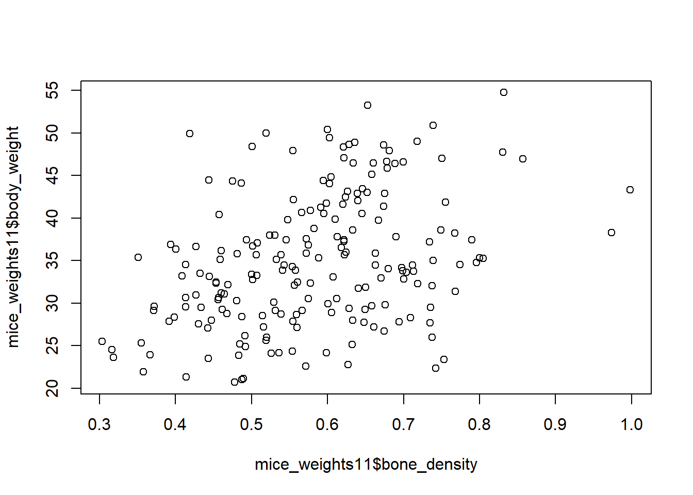
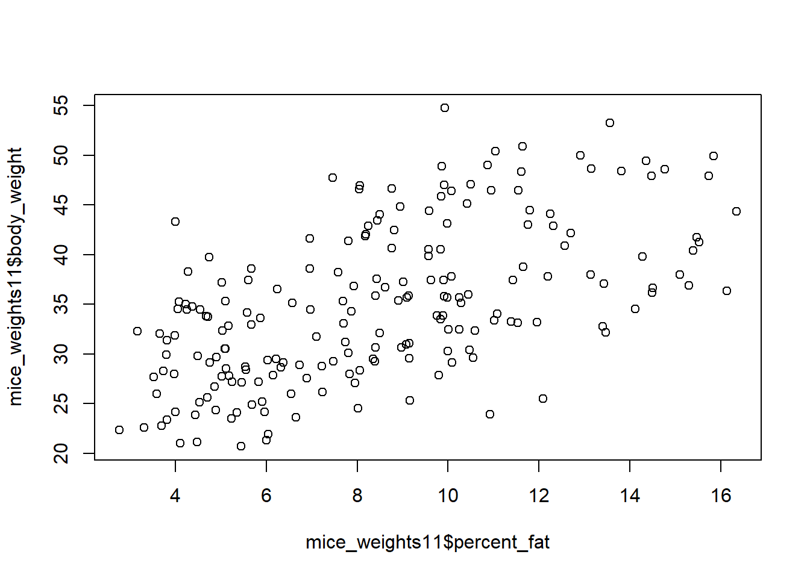

library(dslabs) #loading dslabs to access gapminder
library(dplyr) #loading to follow tidyverse
library(ggplot2) #loading to create plots
help("gapminder") #help file for gapminder dataR Coding Exercise
Loading and Checking Data
Loading Libraries
Gapminder Structure
str(gapminder) #data structure'data.frame': 10545 obs. of 9 variables:
$ country : Factor w/ 185 levels "Albania","Algeria",..: 1 2 3 4 5 6 7 8 9 10 ...
$ year : int 1960 1960 1960 1960 1960 1960 1960 1960 1960 1960 ...
$ infant_mortality: num 115.4 148.2 208 NA 59.9 ...
$ life_expectancy : num 62.9 47.5 36 63 65.4 ...
$ fertility : num 6.19 7.65 7.32 4.43 3.11 4.55 4.82 3.45 2.7 5.57 ...
$ population : num 1636054 11124892 5270844 54681 20619075 ...
$ gdp : num NA 1.38e+10 NA NA 1.08e+11 ...
$ continent : Factor w/ 5 levels "Africa","Americas",..: 4 1 1 2 2 3 2 5 4 3 ...
$ region : Factor w/ 22 levels "Australia and New Zealand",..: 19 11 10 2 15 21 2 1 22 21 ...Gapminder Summary
summary(gapminder) #data summary country year infant_mortality life_expectancy
Albania : 57 Min. :1960 Min. : 1.50 Min. :13.20
Algeria : 57 1st Qu.:1974 1st Qu.: 16.00 1st Qu.:57.50
Angola : 57 Median :1988 Median : 41.50 Median :67.54
Antigua and Barbuda: 57 Mean :1988 Mean : 55.31 Mean :64.81
Argentina : 57 3rd Qu.:2002 3rd Qu.: 85.10 3rd Qu.:73.00
Armenia : 57 Max. :2016 Max. :276.90 Max. :83.90
(Other) :10203 NA's :1453
fertility population gdp continent
Min. :0.840 Min. :3.124e+04 Min. :4.040e+07 Africa :2907
1st Qu.:2.200 1st Qu.:1.333e+06 1st Qu.:1.846e+09 Americas:2052
Median :3.750 Median :5.009e+06 Median :7.794e+09 Asia :2679
Mean :4.084 Mean :2.701e+07 Mean :1.480e+11 Europe :2223
3rd Qu.:6.000 3rd Qu.:1.523e+07 3rd Qu.:5.540e+10 Oceania : 684
Max. :9.220 Max. :1.376e+09 Max. :1.174e+13
NA's :187 NA's :185 NA's :2972
region
Western Asia :1026
Eastern Africa : 912
Western Africa : 912
Caribbean : 741
South America : 684
Southern Europe: 684
(Other) :5586 Gapminder Class
class(gapminder) #type of object[1] "data.frame"Processing Data
Filtering Data
In this code, I am using the pipe operator %>% to pass the original dataset and filter it by continent. This step provides us with the specific data required to proceed with this assignment.
africadata = gapminder %>% #using pipe to pass data to filter function
filter(continent == "Africa")Africadata Structure
Reviewing the structure confirms that we have 2907 observations and 9 variables, which aligns with the professor’s instructions.
str(africadata)'data.frame': 2907 obs. of 9 variables:
$ country : Factor w/ 185 levels "Albania","Algeria",..: 2 3 18 22 26 27 29 31 32 33 ...
$ year : int 1960 1960 1960 1960 1960 1960 1960 1960 1960 1960 ...
$ infant_mortality: num 148 208 187 116 161 ...
$ life_expectancy : num 47.5 36 38.3 50.3 35.2 ...
$ fertility : num 7.65 7.32 6.28 6.62 6.29 6.95 5.65 6.89 5.84 6.25 ...
$ population : num 11124892 5270844 2431620 524029 4829291 ...
$ gdp : num 1.38e+10 NA 6.22e+08 1.24e+08 5.97e+08 ...
$ continent : Factor w/ 5 levels "Africa","Americas",..: 1 1 1 1 1 1 1 1 1 1 ...
$ region : Factor w/ 22 levels "Australia and New Zealand",..: 11 10 20 17 20 5 10 20 10 10 ...Africadata Summary
summary(africadata) country year infant_mortality life_expectancy
Algeria : 57 Min. :1960 Min. : 11.40 Min. :13.20
Angola : 57 1st Qu.:1974 1st Qu.: 62.20 1st Qu.:48.23
Benin : 57 Median :1988 Median : 93.40 Median :53.98
Botswana : 57 Mean :1988 Mean : 95.12 Mean :54.38
Burkina Faso: 57 3rd Qu.:2002 3rd Qu.:124.70 3rd Qu.:60.10
Burundi : 57 Max. :2016 Max. :237.40 Max. :77.60
(Other) :2565 NA's :226
fertility population gdp continent
Min. :1.500 Min. : 41538 Min. :4.659e+07 Africa :2907
1st Qu.:5.160 1st Qu.: 1605232 1st Qu.:8.373e+08 Americas: 0
Median :6.160 Median : 5570982 Median :2.448e+09 Asia : 0
Mean :5.851 Mean : 12235961 Mean :9.346e+09 Europe : 0
3rd Qu.:6.860 3rd Qu.: 13888152 3rd Qu.:6.552e+09 Oceania : 0
Max. :8.450 Max. :182201962 Max. :1.935e+11
NA's :51 NA's :51 NA's :637
region
Eastern Africa :912
Western Africa :912
Middle Africa :456
Northern Africa :342
Southern Africa :285
Australia and New Zealand: 0
(Other) : 0 Creating New Objects
Infant Mortality and Life Expectancy Object
The object I’ve created here is named ad_mortality. I’m utilizing the pipe operator to filter the data and select only the necessary variables which are infant mortality and life expectancy.
ad_mortality = africadata %>% #Creating new object using the filtered data set from gapminder
select(infant_mortality, life_expectancy) #selecting only the columns we needPopulation and Life Expectancy Object
The object I’ve created here is named ad_population. I’m utilizing the pipe operator to filter the data and select only the necessary variables which are population and life expectancy.
ad_population = africadata %>%
select(population, life_expectancy) Data Structure of ad_mortality
str(ad_mortality)'data.frame': 2907 obs. of 2 variables:
$ infant_mortality: num 148 208 187 116 161 ...
$ life_expectancy : num 47.5 36 38.3 50.3 35.2 ...Summary of ad_mortality
summary(ad_mortality) infant_mortality life_expectancy
Min. : 11.40 Min. :13.20
1st Qu.: 62.20 1st Qu.:48.23
Median : 93.40 Median :53.98
Mean : 95.12 Mean :54.38
3rd Qu.:124.70 3rd Qu.:60.10
Max. :237.40 Max. :77.60
NA's :226 Data Structure of ad_population
str(ad_population)'data.frame': 2907 obs. of 2 variables:
$ population : num 11124892 5270844 2431620 524029 4829291 ...
$ life_expectancy: num 47.5 36 38.3 50.3 35.2 ...Summary of ad_population
summary(ad_population) population life_expectancy
Min. : 41538 Min. :13.20
1st Qu.: 1605232 1st Qu.:48.23
Median : 5570982 Median :53.98
Mean : 12235961 Mean :54.38
3rd Qu.: 13888152 3rd Qu.:60.10
Max. :182201962 Max. :77.60
NA's :51 Plotting
Infant Mortality vs Life Expectancy
In this plot, I used ggplot to create a scatterplot. The code is straightforward, utilizing the ad_mortality object to generate it.
ggplot(ad_mortality, aes(x = infant_mortality, y = life_expectancy)) +
geom_point() + #to create scatterplot
labs(title = "Relationship between Infant Mortality and Life Expectancy", x = "Infant Mortality", y = "Life Expectancy") +
theme_bw() #selecting a theme
Life Expectancy vs Population
In this plot, I used ggplot to create a scatterplot. The code is straightforward, utilizing the ad_population object to generate it.
ggplot(ad_population, aes(x = population, y = life_expectancy)) +
geom_point() +
labs(title = "Relationship between Life Expectancy and Population", x = "Population", y = "Life Expectancy") +
scale_x_log10() + #setting log scale
theme_bw() #selecting a theme
Observations
The plot shows unique groups of data with a positive correlation. These groups represent countries with multiple years of data, showing that as population increases, life expectancy also tends to increase
More Data Processing
Finding NA’s in Infant Mortality Variable by Year
To identify the years with the most missing values (NA), I utilized the africadata dataset. First, I grouped it by year and then calculated a new variable representing the count of NA values in the infant mortality column. This approach provides a clearer view of which years have missing data and which ones are complete.
na_finder = africadata %>%
group_by(year) %>% #grouping by year
summarize(missing_im = sum(is.na(infant_mortality))) #creating a new variable that adds all the NA in infant mortalityCreating New Object without NA’s
Now that we have identified the years with complete data, we can create a new object, in this case called africa2000, representing the year 2000. The code filters the africadata dataset based on the year variable to achieve this.
africa2000 = africadata %>%
filter(year == 2000) #filtering by year 2000 in the african data datasetNew Object Summary
summary(africa2000) country year infant_mortality life_expectancy
Algeria : 1 Min. :2000 Min. : 12.30 Min. :37.60
Angola : 1 1st Qu.:2000 1st Qu.: 60.80 1st Qu.:51.75
Benin : 1 Median :2000 Median : 80.30 Median :54.30
Botswana : 1 Mean :2000 Mean : 78.93 Mean :56.36
Burkina Faso: 1 3rd Qu.:2000 3rd Qu.:103.30 3rd Qu.:60.00
Burundi : 1 Max. :2000 Max. :143.30 Max. :75.00
(Other) :45
fertility population gdp continent
Min. :1.990 Min. : 81154 Min. :2.019e+08 Africa :51
1st Qu.:4.150 1st Qu.: 2304687 1st Qu.:1.274e+09 Americas: 0
Median :5.550 Median : 8799165 Median :3.238e+09 Asia : 0
Mean :5.156 Mean : 15659800 Mean :1.155e+10 Europe : 0
3rd Qu.:5.960 3rd Qu.: 17391242 3rd Qu.:8.654e+09 Oceania : 0
Max. :7.730 Max. :122876723 Max. :1.329e+11
region
Eastern Africa :16
Western Africa :16
Middle Africa : 8
Northern Africa : 6
Southern Africa : 5
Australia and New Zealand: 0
(Other) : 0 New Object Data Structure
str(africa2000)'data.frame': 51 obs. of 9 variables:
$ country : Factor w/ 185 levels "Albania","Algeria",..: 2 3 18 22 26 27 29 31 32 33 ...
$ year : int 2000 2000 2000 2000 2000 2000 2000 2000 2000 2000 ...
$ infant_mortality: num 33.9 128.3 89.3 52.4 96.2 ...
$ life_expectancy : num 73.3 52.3 57.2 47.6 52.6 46.7 54.3 68.4 45.3 51.5 ...
$ fertility : num 2.51 6.84 5.98 3.41 6.59 7.06 5.62 3.7 5.45 7.35 ...
$ population : num 31183658 15058638 6949366 1736579 11607944 ...
$ gdp : num 5.48e+10 9.13e+09 2.25e+09 5.63e+09 2.61e+09 ...
$ continent : Factor w/ 5 levels "Africa","Americas",..: 1 1 1 1 1 1 1 1 1 1 ...
$ region : Factor w/ 22 levels "Australia and New Zealand",..: 11 10 20 17 20 5 10 20 10 10 ...More Plotting
Infant Mortality vs Life Expectancy
I am reusing the code from the initial scatterplots, replacing the dataset from africadata with africa2000 to visualize the data specifically for the year 2000.
ggplot(africa2000, aes(x = infant_mortality, y = life_expectancy)) +
geom_point() + #to create scatterplot
labs(title = "Relationship between Infant Mortality and Life Expectancy", x = "Infant Mortality", y = "Life Expectancy") +
theme_bw()
Life Expectancy vs Population
I am reusing the code from the initial scatterplots, replacing the dataset from africadata with africa2000 to visualize the data specifically for the year 2000.
ggplot(africa2000, aes(x = population, y = life_expectancy)) +
geom_point() +
labs(title = "Relationship between Life Expectancy and Population", x = "Population", y = "Life Expectancy") +
scale_x_log10() + #setting log scale
theme_bw()
Simple Model Fit
Linear Models
Life Expectancy ~ Infant Mortality
In the linear model below, life_expectancy is our outcome variable, while infant_mortality is our predictor. This model helps us identify if there is a linear relationship between these two variables.
lm1= lm(life_expectancy~infant_mortality, data = africa2000)Summary lm1
summary(lm1)
Call:
lm(formula = life_expectancy ~ infant_mortality, data = africa2000)
Residuals:
Min 1Q Median 3Q Max
-22.6651 -3.7087 0.9914 4.0408 8.6817
Coefficients:
Estimate Std. Error t value Pr(>|t|)
(Intercept) 71.29331 2.42611 29.386 < 2e-16 ***
infant_mortality -0.18916 0.02869 -6.594 2.83e-08 ***
---
Signif. codes: 0 '***' 0.001 '**' 0.01 '*' 0.05 '.' 0.1 ' ' 1
Residual standard error: 6.221 on 49 degrees of freedom
Multiple R-squared: 0.4701, Adjusted R-squared: 0.4593
F-statistic: 43.48 on 1 and 49 DF, p-value: 2.826e-08Conclusion
After running the linear model, we can see a p-value of 2.826e-08, which is significantly smaller than our 0.05 signficance level. We can reject the null hypothesis, and this suggest a strong linear relationship between infant mortality and life expectancy. The R-squared suggest that 47.01% of the variability in life expectancy can be explained by infant mortality. For every unit increase in infant mortality, we expect to see a decrease of 0.18916 units in life expectancy.
Life Expectancy ~ Population
In the linear model below, life_expectancy is our outcome variable, while population is our predictor. This model helps us identify if there is a linear relationship between these two variables.
lm2= lm(life_expectancy~population, data = africa2000)Summary
summary(lm2)
Call:
lm(formula = life_expectancy ~ population, data = africa2000)
Residuals:
Min 1Q Median 3Q Max
-18.429 -4.602 -2.568 3.800 18.802
Coefficients:
Estimate Std. Error t value Pr(>|t|)
(Intercept) 5.593e+01 1.468e+00 38.097 <2e-16 ***
population 2.756e-08 5.459e-08 0.505 0.616
---
Signif. codes: 0 '***' 0.001 '**' 0.01 '*' 0.05 '.' 0.1 ' ' 1
Residual standard error: 8.524 on 49 degrees of freedom
Multiple R-squared: 0.005176, Adjusted R-squared: -0.01513
F-statistic: 0.2549 on 1 and 49 DF, p-value: 0.6159Conclusion
After running the linear model, we can see the p-value of 0.6159 which is above our 0.05 significance level. We do not reject the null hypothesis, and this suggest there is not linear relationship between infant mortality and life expectancy.
This section contributed by Benjamin Farias
Summary of dataset
# Get an understanding of the structure of the data
str(mice_weights)'data.frame': 780 obs. of 7 variables:
$ body_weight : num 27.6 23 28.7 32.6 28.6 ...
$ bone_density: num 0.616 0.769 0.684 0.644 0.53 ...
$ percent_fat : num 7.26 4.95 6.02 9.54 6.99 ...
$ sex : Factor w/ 2 levels "F","M": 1 1 1 1 1 1 1 1 1 1 ...
$ diet : Factor w/ 2 levels "chow","hf": 1 1 1 1 1 1 1 1 1 1 ...
$ gen : Factor w/ 5 levels "4","7","8","9",..: 1 1 1 1 1 1 1 1 1 1 ...
$ litter : Factor w/ 2 levels "1","2": 1 1 1 1 1 1 1 1 1 1 ...# Get summary statistics
summary(mice_weights) body_weight bone_density percent_fat sex diet gen
Min. :18.13 Min. :0.2708 Min. : 2.552 F:398 chow:394 4 : 97
1st Qu.:28.09 1st Qu.:0.4888 1st Qu.: 5.566 M:382 hf :386 7 :195
Median :32.98 Median :0.5643 Median : 8.276 8 :193
Mean :34.08 Mean :0.5697 Mean : 8.594 9 : 97
3rd Qu.:39.37 3rd Qu.:0.6373 3rd Qu.:10.926 11:198
Max. :65.15 Max. :0.9980 Max. :22.154
NA's :4 NA's :4
litter
1:442
2:338
Processing
# Finding which generation had the most observations
mice_weights %>% count(gen) gen n
1 4 97
2 7 195
3 8 193
4 9 97
5 11 198# Filtering for only the generation with the most observations (11)
mice_weights11 <- mice_weights %>% filter(gen==11)Exploratory figures
# Plotting the weight against bone density.
plot(mice_weights11$bone_density, mice_weights11$body_weight)
# Plotting the weight against the percent fat
plot(mice_weights11$percent_fat, mice_weights11$body_weight)
Models
# Creating a linear model for weight by bone density
m1 <- lm(body_weight ~ bone_density, data = mice_weights11)
# Creating a linear model for weight by percent fat
m2 <- lm(body_weight ~ percent_fat, data = mice_weights11)# Summary of the weight by bone density model
summary(m1)
Call:
lm(formula = body_weight ~ bone_density, data = mice_weights11)
Residuals:
Min 1Q Median 3Q Max
-16.3057 -5.1214 -0.4921 5.5928 18.6938
Coefficients:
Estimate Std. Error t value Pr(>|t|)
(Intercept) 21.515 2.485 8.659 1.79e-15 ***
bone_density 23.118 4.181 5.530 1.02e-07 ***
---
Signif. codes: 0 '***' 0.001 '**' 0.01 '*' 0.05 '.' 0.1 ' ' 1
Residual standard error: 7.2 on 195 degrees of freedom
(1 observation deleted due to missingness)
Multiple R-squared: 0.1356, Adjusted R-squared: 0.1311
F-statistic: 30.58 on 1 and 195 DF, p-value: 1.021e-07# Summary of the weight by percent fat model
summary(m2)
Call:
lm(formula = body_weight ~ percent_fat, data = mice_weights11)
Residuals:
Min 1Q Median 3Q Max
-14.3577 -4.8785 -0.8575 4.8792 17.7825
Coefficients:
Estimate Std. Error t value Pr(>|t|)
(Intercept) 23.6096 1.2210 19.336 <2e-16 ***
percent_fat 1.3436 0.1345 9.993 <2e-16 ***
---
Signif. codes: 0 '***' 0.001 '**' 0.01 '*' 0.05 '.' 0.1 ' ' 1
Residual standard error: 6.297 on 195 degrees of freedom
(1 observation deleted due to missingness)
Multiple R-squared: 0.3387, Adjusted R-squared: 0.3353
F-statistic: 99.86 on 1 and 195 DF, p-value: < 2.2e-16Summary
Both models have a p-value below .05 meaning there are statistically significant linear relations between weight and both percent fat and bone density; however, the percent fat model has a higher r-squared meaning the model represents more of the data.